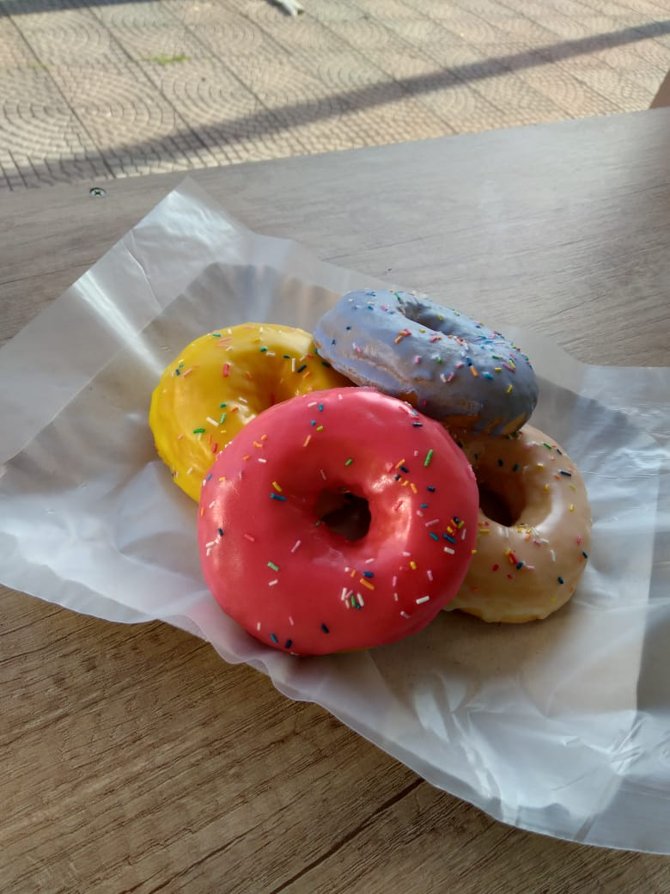
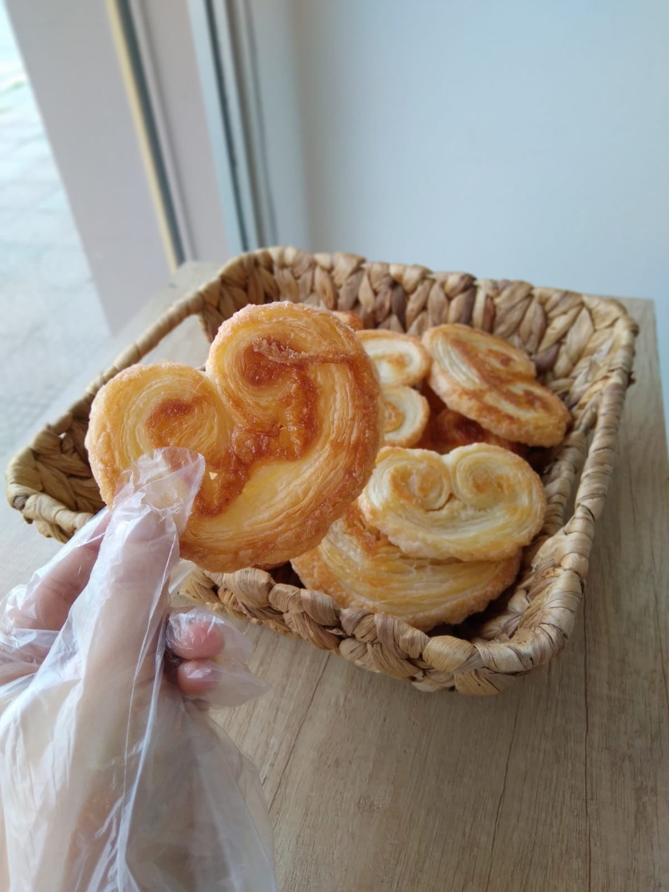
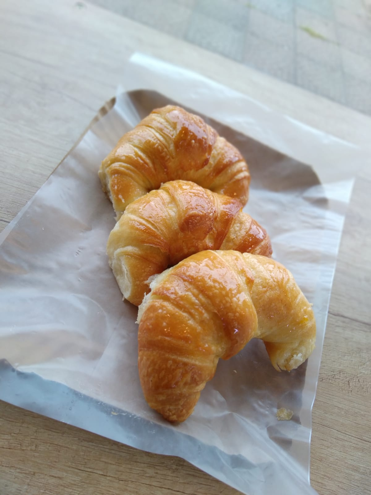

Servicios

Donas Glaseadas
Nuestras donas glaseadas son unas de las opciones favoritas de nuestros clientes. Sus colores brillantes y su sabor lo hacen elegibles para una merienda.

Palmeritas
Nuestras palmeritas realizadas con un hojaldre casero son ideales para compartir con amigos, gracias a sus distintas capas que hacen de una simple juntada en amigos un momento divertido.

Medialunas
¡Las medialunas, un clasico argentino que no puede faltar! Con su color dorado recien salidas del horno son especiales para acompañar tus mates. Prueba una de nuestras medialunas, quedaras maravillado.